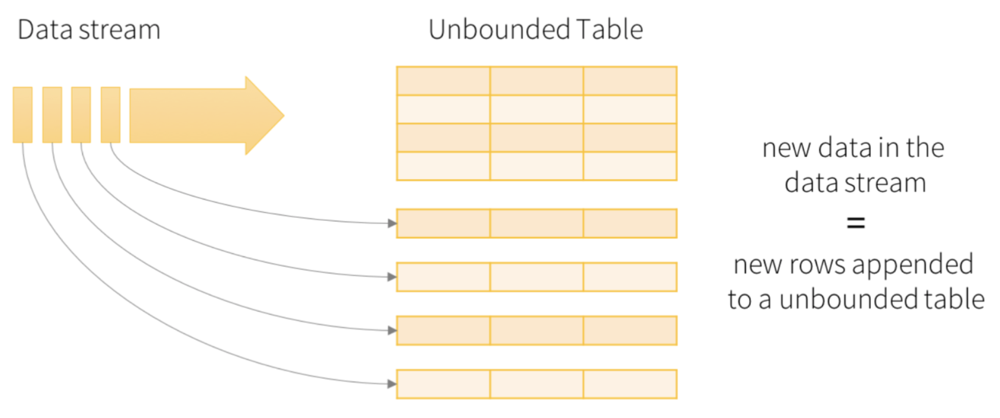
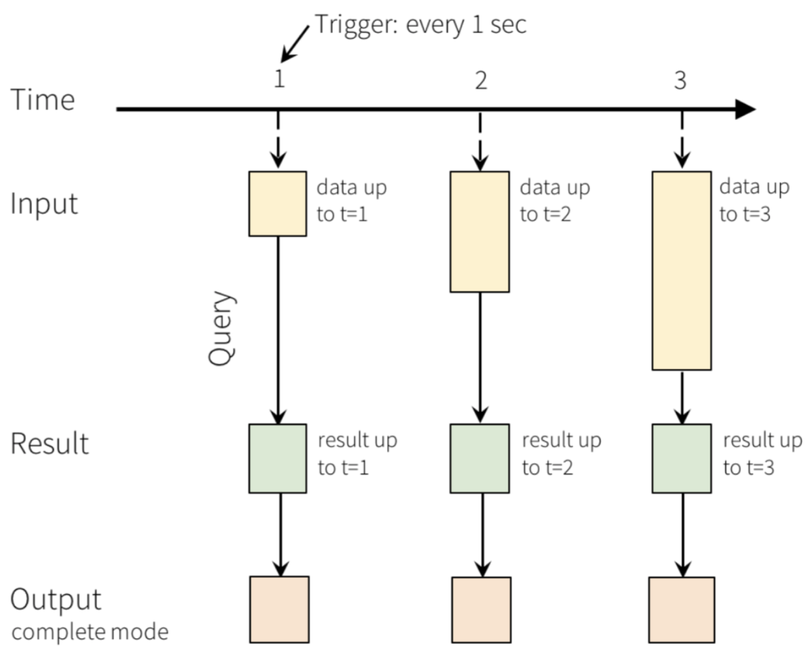
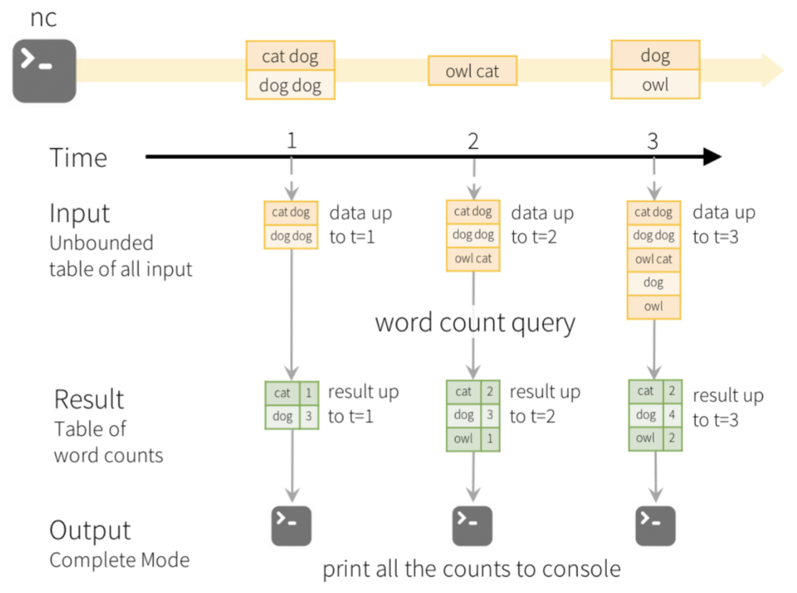
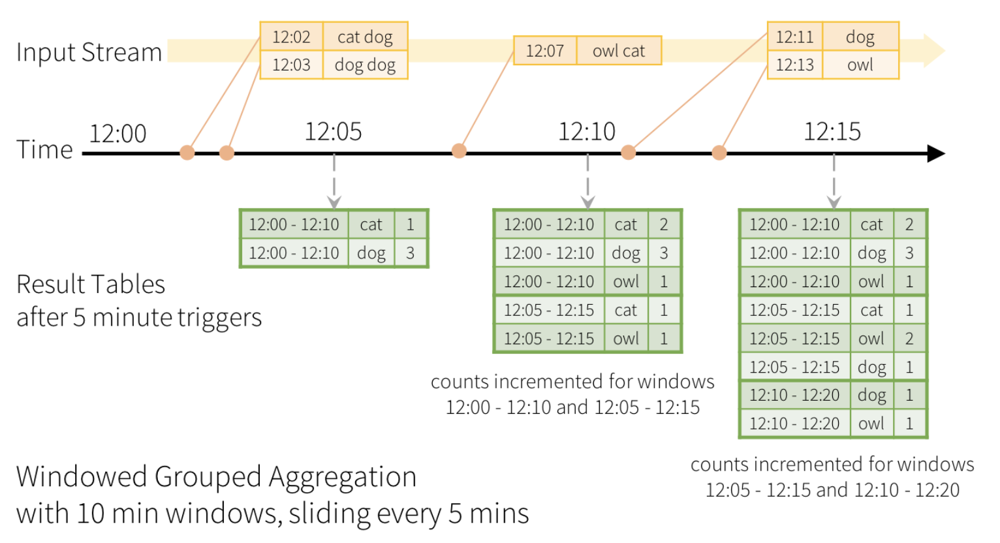
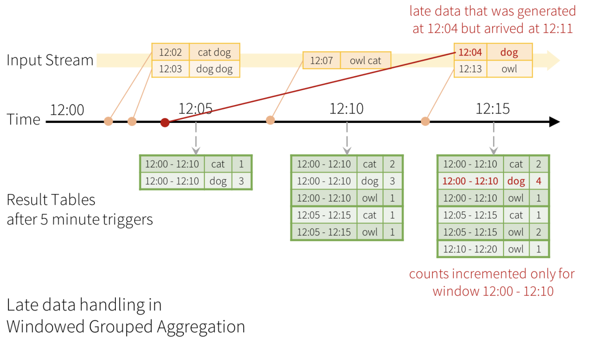
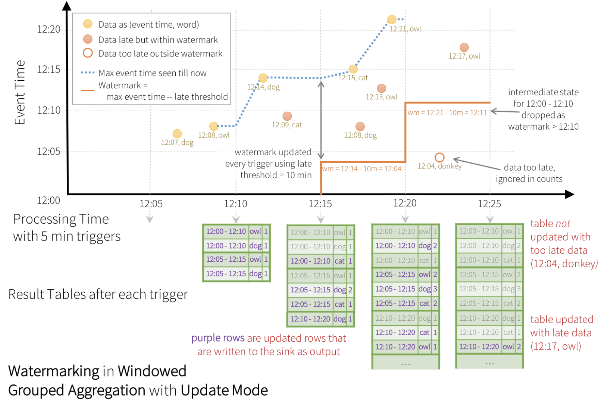
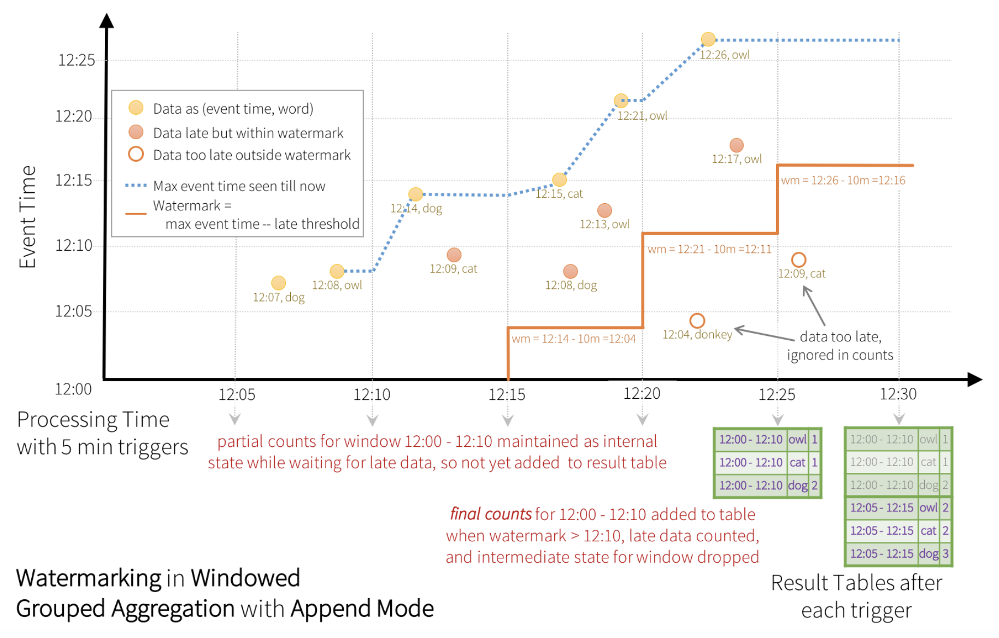
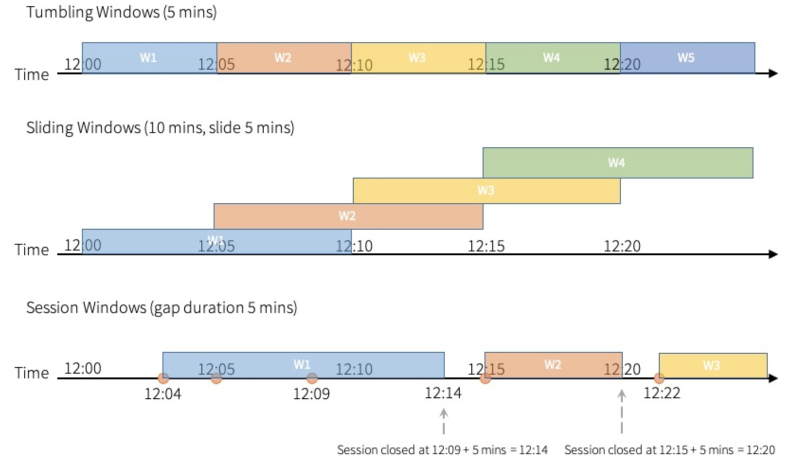

writeStream.format("parquet").option("path", "path/to/destination/dir").start()
// format can be "orc", "json", "csv", etc.
writeStream.format("kafka").option("kafka.bootstrap.servers", "host1:port1,host2:port2")
.option("topic", "updates").start()
writeStream.foreach(...).start()
writeStream.format("console").start()
writeStream.format("memory").queryName("tableName").start()
from pyspark.sql import SparkSession from pyspark.sql.functions import explode from pyspark.sql.functions import split
spark = SparkSession.builder.appName("StructuredNetworkWordCount").getOrCreate()
lines = spark.readStream.format("socket").option("host", "localhost").option("port", 9999).load()
words = lines.select( explode( split(lines.value, " ") ).alias("word") )
wordCounts = words.groupBy("word").count()
query = wordCounts.writeStream.outputMode("complete").format("console").start()
query.awaitTermination()
nc -lk 9999
./bin/spark-submit examples/src/main/python/sql/streaming/structured_network_wordcount.py localhost 9999
abc def
abc def
------------------------------------------- Batch: 0 ------------------------------------------- +----+-----+ |word|count| +----+-----+ +----+-----+ ------------------------------------------- Batch: 1 ------------------------------------------- +----+-----+ |word|count| +----+-----+ | abc| 1| | def| 1| +----+-----+ ------------------------------------------ Batch: 2 ------------------------------------------- +----+-----+ |word|count| +----+-----+ | abc| 2| | def| 2| +----+-----+
from pyspark.sql import SparkSession
spark = SparkSession.builder.appName("StructuredNetworkWordCount").getOrCreate()
socketDF = spark.readStream.format("socket").option("host", "localhost").option("port", 9999).load()
numbers = socketDF.select(socketDF.value.cast("Int").alias("number"))
numbersge100= numbers.filter(numbers.number>=100)
numberCounts = numbersge100.groupBy("number").count()
query = numberCounts.writeStream.outputMode("complete").format("console").start()
from pyspark.sql import SparkSession from pyspark.sql.functions import StructType
spark = SparkSession.builder.appName("StructuredNetworkWordCount").getOrCreate()
userSchema = StructType().add("number", "integer")
csvDF = spark.readStream.schema(userSchema).csv("/user/bigdata")
numberCounts = csvDF.groupBy("number").count()
query = numberCounts.writeStream.outputMode("complete").format("console").start()
df = ... # streaming DataFrame with IOT device data with schema
{ device: string, deviceType: string, signal: double, time: DateType }
df.select("device").where("signal > 10")
df.groupBy("deviceType").count()
df.createOrReplaceTempView("updates")
spark.sql("select count(*) from updates")
df.isStreaming()
James,20 Alice,55 Harry,0 Charlie,99
from pyspark.sql import SparkSession from pyspark.sql.functions import StructType
spark = SparkSession.builder.appName("StructuredNetworkWordCount").getOrCreate()
userSchema = StructType().add("name", "string").add("score", "integer")
gradesDF = spark.readStream.schema(userSchema).csv("/user/bigdata")
gradesDF.createOrReplaceTempView("grades")
sqlDF=spark.sql("select count(*), max(score), min(score), avg(score) from grades")
query = sqlDF.writeStream.outputMode("complete").format("console").start()
------------------------------------------ Batch: 0 ------------------------------------------- +--------+----------+----------+----------+ |count(1)|max(score)|min(score)|avg(score)| +--------+----------+----------+----------+ | 2| 55| 20| 37.5| +--------+----------+----------+----------+ ------------------------------------------- Batch: 1 ------------------------------------------- +--------+----------+----------+----------+ |count(1)|max(score)|min(score)|avg(score)| +--------+----------+----------+----------+ | 4| 99| 0| 43.5| +--------+----------+----------+----------+ ------------------------------------------- Batch: 2 ------------------------------------------- +--------+----------+----------+----------+ |count(1)|max(score)|min(score)|avg(score)| +--------+----------+----------+----------+ | 6| 99| 0| 41.5| +--------+----------+----------+----------+

words = ... # streaming DataFrame of schema { timestamp: Timestamp, word: String }
windowedCounts = words.groupBy(window(words.timestamp,
"10 minutes", "5 minutes"),
words.word).count()

words = ... # streaming DataFrame of schema { timestamp: Timestamp, word: String }
windowedCounts = words.withWatermark("timestamp", "10 minutes").groupBy(
window(words.timestamp, "10 minutes", "5 minutes"),
words.word).count()



events = ... # streaming DataFrame of schema {timestamp: Timestamp, userId: String}
sessionizedCounts = events.withWatermark("timestamp", "10 minutes").groupBy(
session_window(events.timestamp, "5 minutes"),
events.userId).count()
from pyspark.sql import functions as sf
events = ... # streaming DataFrame of schema { timestamp: Timestamp, userId: String }
session_window = session_window(events.timestamp,
sf.when(events.userId == "user1", "5 seconds")
.when(events.userId == "user2", "20 seconds")
.otherwise("5 minutes"))
sessionizedCounts = events \
.withWatermark("timestamp", "10 minutes") \
.groupBy(
session_window,
events.userId) \
.count()